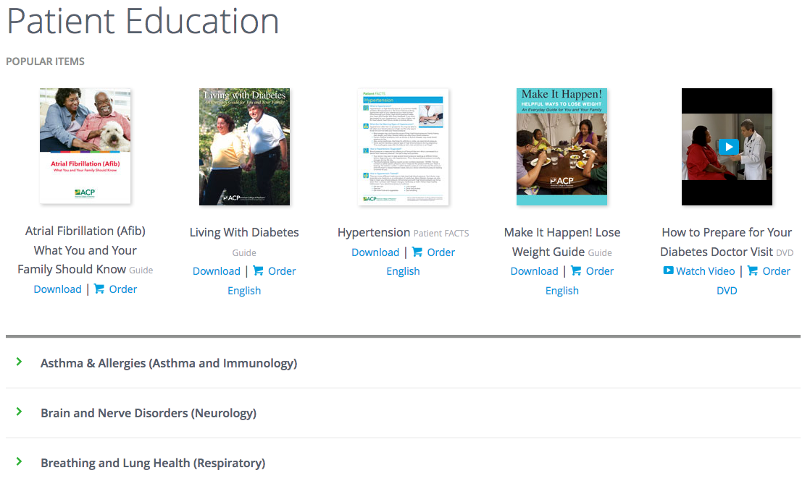
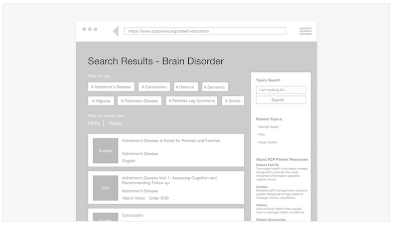
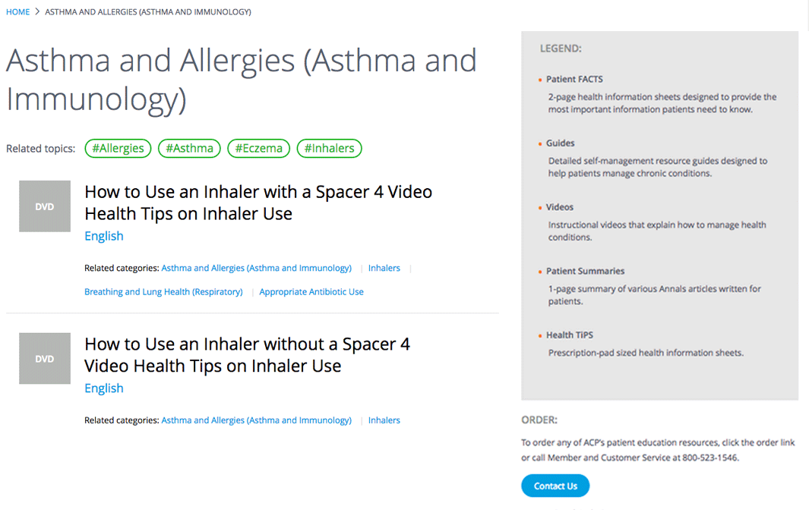
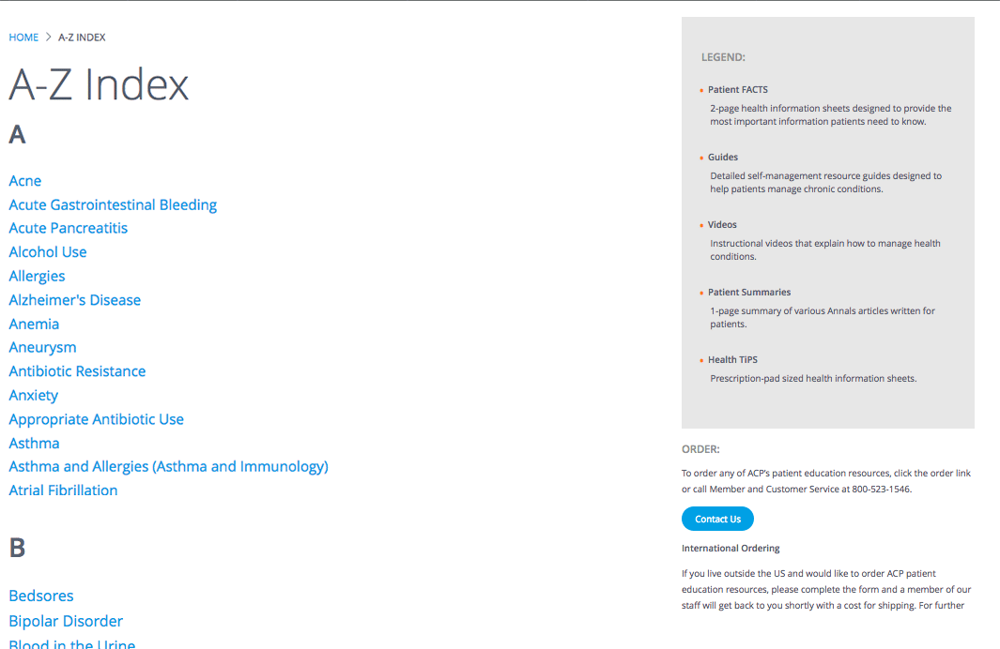

The American College of Physicians
Helping doctors and patients get the information they need.
Overview
The Challenge
After a recent redesign of the American College of Physicians' (ACP) website, which included updating to a new CMS, many stakeholders found themselves unsatisfied with the process of content creation and editing.
This was compounded by the fact the analytics showed people were not engaging with the content. This was an organization-wide concern since it affected sales of training materials.
Solution
I was in a position to work between teams and departments. I partnered with executives, engineers, content strategists, designers and data analysts to balance organizational requests and end user needs, both inside and outside the college.
In this capacity I lead the design efforts to identify pain‐points related to the browse-and-discovery experience and usability of the college's educational materials.
My Role
UI Design & Development
Timeline
Dec. 2016 - Jun. 2017
Tools
Google Sheets, Adobe XD, Balsamiq, Photoshop, Sketch, HTML, CSS, Javascript, Drupal
Approach
I was brought to ACP as a senior front end web developer. The role was a great opportunity to explore information architecture, user journeys and interface design.
At the heart of this process was converting something that was being treated as a waterfall project while the requirments called for an agile approach.
Process
Discovery
Using Clicktale, a heat map style analytics tool, I found that people were not attempting to discover the material hidden on the page. In an attempt to give everybody everything, most people were not getting anything.
We used all available tools to see where the content is and where it can go from here.
Before: The existing layout emphasized only a few pieces of content which left people unable and unwilling to search for what they came to find.
Using spreadsheets I was able to share information and organize content with multiple departments simultaneously. Everyone was on the same page.
Sketching
While I don't adhere to a design dogma, there are proven techniques at certain points of the process that allow greater insight into possible solutions to the problem.
Everything starts with a sketch. When you need to generate lots of ideas quickly, working through a problem in lo-fi speeds things up.
Define the different types of content we are working with.
Brainstorm how to make the mechanics easier for searching.
Define the taxonomies and how to best use them.
Before any coding happened it was necessary to think visually on paper.
Design Direction
After the research was finished it was time to make some lo-fi wireframes. Wireframing is highly iterative and many pieces of paper get tossed. Next time I'd want to get a more eco-friendly way to toss out ideas ü§î
We wanted to help people create shortcuts by enriching their mental models.
Provided familiar patterns help stop people from being overwhelmed.

Displaying the ways people asked to filter and search for content.
To complement the hierarchical architecture there is also an alphabetical list of topics.
Vision
It was necessary to give people an experience. There was no faster way to do this than with a functional prototype: fast and effective. It was kept in low fidelity so users wouldn't be confused as to what they were seeing/clicking. The feedback was near-instant, useful and insightful.
With the wireframes in place, it was time to add some basic interactions.
Having an online prototype meant people could use it at their own pace.
The responses were constructive, specific and ultimately actionable.

I was able to avoid building for edge cases and focus on 99% of the users.
Delivery
I styled a modular front end to accommodate for daily iterations and features.

Even though not all of the features were released in 1.0, we were able to ship a robust MVP.
Content is clear, scanable, easily identifiable and clickable. Even though not all of the features were released in 1.0, we were able to ship a robust MVP.

A glossary of topics help people search alphabetically if they want. Content is clear, scanable, easily identifiable and clickable. Even though not all of the features were released in 1.0, we were able to ship a robust MVP.
In Closing
By working as a team, we were able to deliver a system that can handle any amount of content and is completely scalable. This new area of the site is modeled after the Netflix content strategy: cross-categories are anticipated and encouraged. An updated experience for constantly updating information.
Now every page and every piece of content is traceable in the various analytic tools the college uses. And people have easy-to-use paths to help navigate them through the 100+ years of content the site has to offer.
Not every feature we planned on was incorporated into the launch. But moving fast and getting real-time feedback helped us keep the wire frames and prototypes just that: smaller parts of a whole.